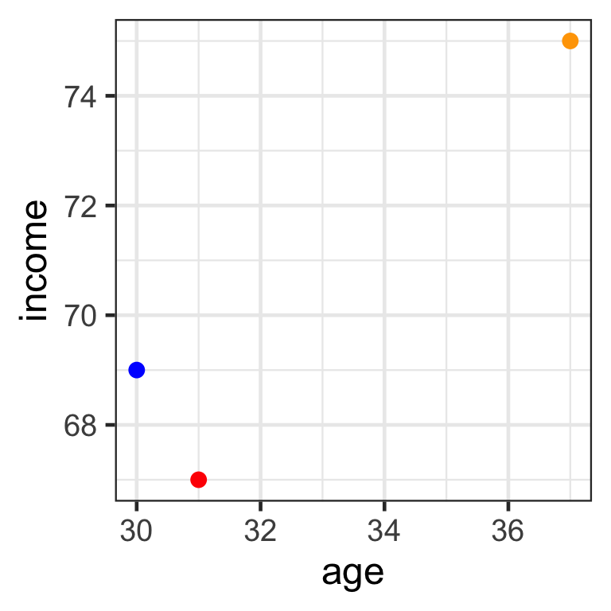
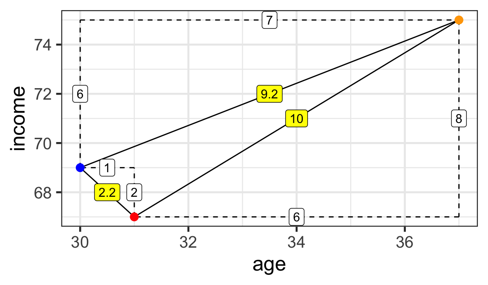
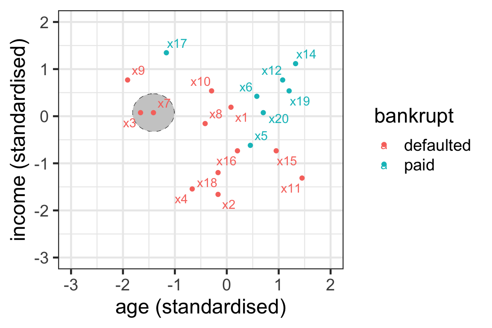
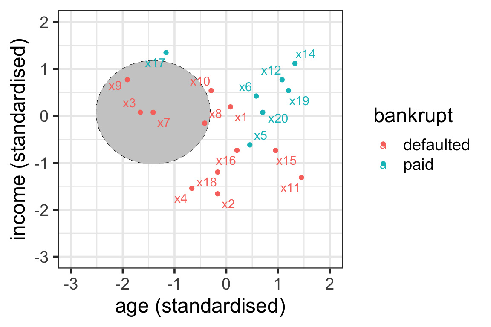
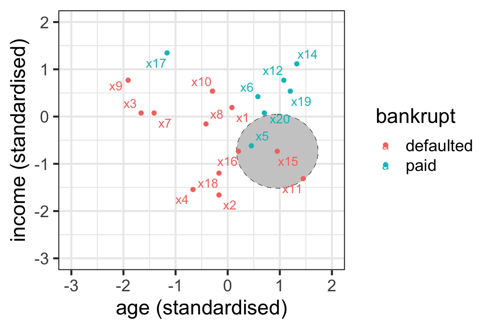
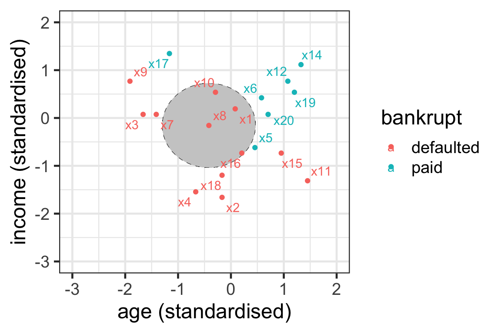
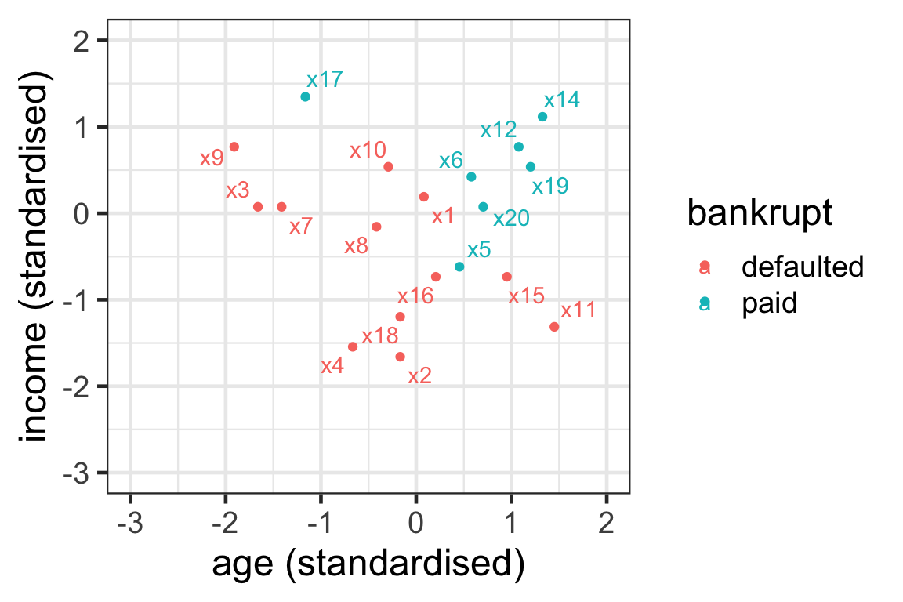
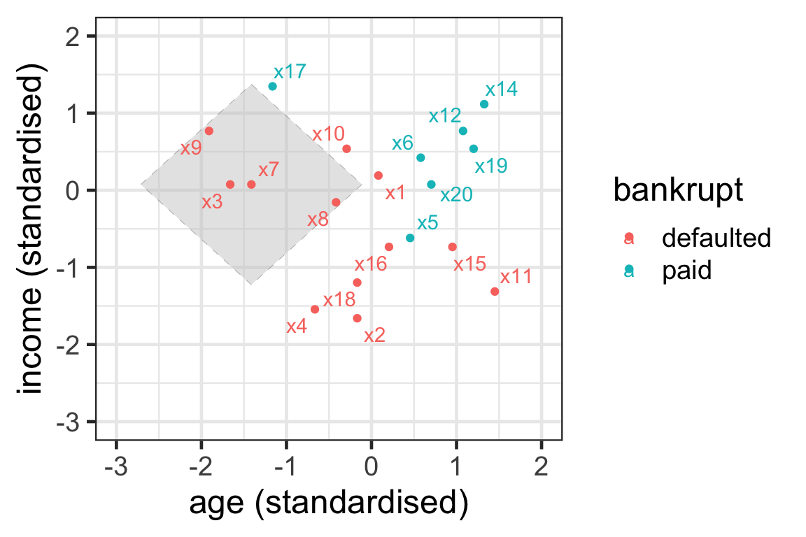
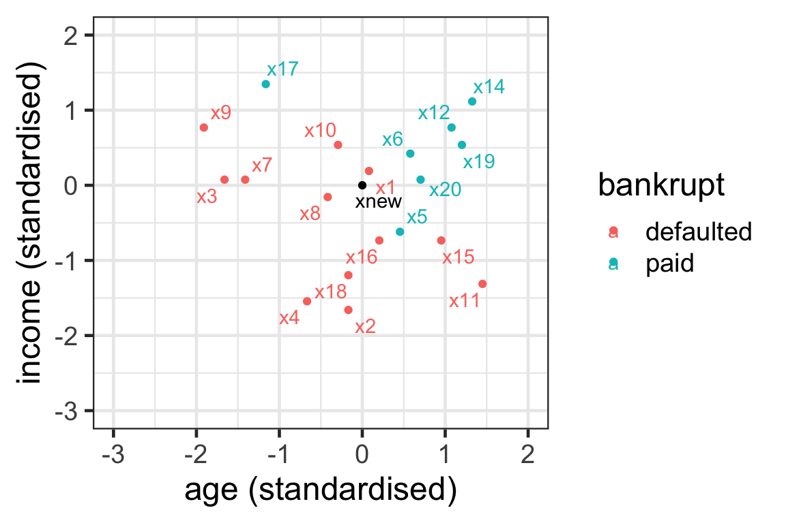
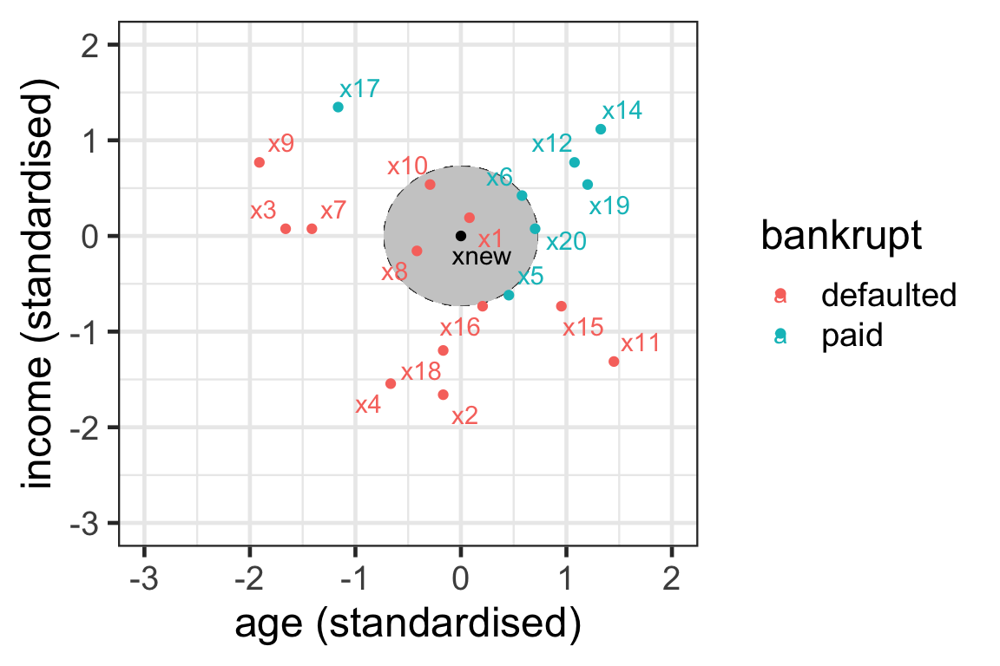

ETC3250/5250
Introduction to Machine Learning
k-nearest neightbours
Lecturer: Emi Tanaka
Department of Econometrics and Business Statistics
Motivation
- When new training data becomes available, the models so far require re-estimation.
- Re-estimation can be time consuming.
- k-nearest neighbours (kNN) requires no explicit training or model.
Neighbours
- An observation j is said to be a neighbour of observation i if its predictor values \boldsymbol{x}_j are similar to the predictor values \boldsymbol{x}_i.
- The k-nearest neighbours to observation i are the k observations, with the most similar predictor values to \boldsymbol{x}_i.
- But how do we measure similarity?
Distance metrics
Simple example
- Consider 3 individuals and 2 predictors (age and income):
- Mr Orange is 37 years old and earns $75K per year.
- Mr Red is 31 years old and earns $67K per year.
- Mr Blue is 30 years old and earns $69K per year.
- Which is the nearest neighbour to Mr Red?
Computing distances
- For two variables, we can use Pythagoras’ theorem to calculate the distances between individuals.

Distances:
- \sqrt{6^2 + 8^2} = 10
- \sqrt{1^2 + 2^2} \approx 2.2
- \sqrt{7^2 + 6^2} \approx 9.2
Mr Red is closest to Mr Blue.
- But how do we compute the distances between observations when there are more than two variables?
Euclidean distance
- Suppose \boldsymbol{x}_{i} is the value of the predictors for observation i, \boldsymbol{x}_{j} is the value of the predictors for observation j.
- The Euclidean distance (ED) between observations i and j can be computed as
D_{Euclidean}\left(\boldsymbol{x}_{i},\boldsymbol{x}_{j}\right)=\sqrt{\sum\limits_{s=1}^p \left(x_{is}-x_{js}\right)^2}.
Manhattan distance
- There are other ways to compute the distances.
- Another distance metric is the Manhattan distance, also known as the block distance:
D_{Manhattan}\left(\boldsymbol{x}_{i},\boldsymbol{x}_{j}\right)=\sum\limits_{s=1}^p |x_{is}-x_{js}|.
Chebyshev distance
- The Chebyshev distance is the maximum distance between any variables:
D_{Chebyshev}\left(\boldsymbol{x}_{i},\boldsymbol{x}_{j}\right)=\max_{s = 1, \dots, p} |x_{is}-x_{js}|.
Canberra distance
- The Canberra distance is a weighted version of the Manhattan distance:
D_{Canberra}\left(\boldsymbol{x}_{i},\boldsymbol{x}_{j}\right)=\sum\limits_{s=1}^p \dfrac{|x_{is}-x_{js}|}{|x_{is}| + |x_{js}|}.
- If x_{is} = x_{js} = 0 then it is omitted from the sum.
Jaccard distance
- The Jaccard distance, or
binarydistance, measures the proportion of differences in non-zero elements between two variables out of elements where at least one variable is non-zero:
D_{Jaccard}\left(\boldsymbol{x}_{i},\boldsymbol{x}_{j}\right) = 1 - \dfrac{|A\cap B|}{|A\cup B|}, where
- A = \{s~|~x_{is} = 0 \text{ for }s =1, \dots, p\} and
- B = \{s~|~x_{js} = 0 \text{ for }s =1, \dots, p\}.
Minkowski distance
- The Minkowski distance is a generalisation of the Euclidean distance (q = 2) and Manhattan distance (q = 1):
D_{Minkowski}\left(\boldsymbol{x}_{i},\boldsymbol{x}_{j}\right)=\left(\sum\limits_{s=1}^p \left|x_{is}-x_{js}\right|^q\right)^{\frac{1}{q}}.
Computing distances with R
simple <- data.frame(age = c(37, 31, 30),
income = c(75, 67, 69),
row.names = c("Orange", "Red", "Blue"))
simple age income
Orange 37 75
Red 31 67
Blue 30 69 Orange Red
Red 10.000000
Blue 9.219544 2.236068Other methods available:
maximum(Chebyshev distance)manhattancanberra
binary(Jaccard distance)minkowski
Standardising the variables
scroll
Data
Orange Red
Red 8000.002
Blue 6000.004 2000.000- The units of measurements are now very different across variables.
- Here
incomein dollars contributes greater to the distance thanagein years. - We commonly calculate distance after standardising the variables so the variables are in a comparable scale.
k-nearest neighbours
Notations for neighbours
- { \mathcal{N}_i^k} denotes a set of index of k observations with the smallest distance to observation i.
- For instance, { \mathcal{N}^2_{10} =\{3, 5\}} indicates that the nearest neighbours for observation 10 are observations 3 and 5.
- Alternatively, it can also be defined as {\mathcal{N}^k_i = \{j~|~D\left(\boldsymbol{x}_{i},\boldsymbol{x}_{j}\right)<\epsilon_k\}}.
- All observations whose distance to \boldsymbol{x}_i is less than the positive scalar \epsilon_k.
- The value \epsilon_k is chosen so that only k neighbours are chosen.
Illustration of neighbours 1
- For observation 7 with k=1, we have { \mathcal{N}^1_7} = \{3\}.
- Here we use Euclidean distance and \epsilon_k = 0.4.

Illustration of neighbours 2
- { \mathcal{N}_7^3} = \{3, 8, 9\}.

Illustration of neighbours 3
- \mathcal{N}_{15}^3 = \{5, 11, 16\}

Illustration of neighbours 4
- \mathcal{N}_{8}^3 = \{1, 10, 16\}

Your turn
- Can you find the 3-nearest neighbours to observation 9?

The boundary region for Euclidean distance
- With one predictor finding the nearest neighbours is finding the k observations inside an interval around x_i: [x_i-\epsilon_k,x_i+\epsilon_k].
- With two predictors it is finding the k observations inside a circle around \boldsymbol{x}_i.
- With three predictors it is finding the k observations inside a sphere around \boldsymbol{x}_i.
- In high dimensions ( { p>3} ) it is finding the k observations inside a hyper-sphere around \boldsymbol{x}_i.
Illustration of neighbours: Manhattan distance
- { \mathcal{N}_7^3} = \{3, 8, 9\}.

- Neighbours are selected within the boundary of a tilted square.
Prediction with kNN
- Assume that we want to predict a new record with predictor values \boldsymbol{x}_\text{new}.
- For classification problems, kNN predicts the outcome class in three steps:
- Find the k-nearest neighbours \mathcal{N}^k_{\text{new}}.
- Count how many neighbours belong to class 1 and to class 2.
- Take as your prediction the class with the majority of votes.
Prediction with kNN: New data
- Suppose that the new customer has a (standardized) age 0 with (standardized) income of 0.
- Let’s use 5-nearest neighbours to predict whether they can pay their loan.

Prediction with kNN: Step 1

- { \mathcal{N}_{\text{new}}^5 = \{1, 6, 8, 10, 20\}}.
Prediction with kNN: Steps 2 and 3
- Step 2:
- 2 votes for paid: 6 and 20.
- 3 votes for default: 1, 8 and 10.
- Step 3: The new record is predicted to default on their loan.
Prediction with kNN: Propensity score
- We can also think about the proportion of class 1 observations as a propensity score.
- The propensity score is: { \text{Pr}\left(y_{\text{new}}=1|\boldsymbol{x}_{\text{new}}\right)= \frac{1}{k}\sum_{\boldsymbol{x}_j\in\mathcal{N}^k_{\text{new}}}I(y_j=1) }
- Proportion of neighbours in favor of class 1.
Prediction with kNN: Propensity score calculation
To compute the propensity score of the new record in the example, paid is class 1 and defaulted class 2.
Then \begin{align*}P\left(y_{\text{new}} =1|\boldsymbol{x}_{\text{new}}\right) &= \frac{1}{5} (I(y_1=1)+I(y_6=1)+I(y_{8}=1)\\ &\qquad+I(y_{10}=1)+I(y_{20}=1))\\&=\frac{1}{5}(0 + 1 + 0 + 0 + 1)\\&=0.4.\end{align*}
An application to caravan data
The business problem
- The Insurance Company (TIC) Benchmark is interested in increasing their business.
- Their salesperson must visit each potential customer.
- The company wants to use data on old customers to maximize the insurance purchases.
- The predictions from the trained model can help the salesperson spend their time on a customer that is more likely to purchase the caravan insurance policy.
Sales of insurance policy with caravan data
scroll
- The data contains 5822 customer records.
- The full description of data can be found here.
- Variables 1 to 43 are sociodemographic. Obtained from zip codes. Customers with the same zip code have identical attributes.
- Variables 44 to 85 product ownership data.
- Variable 86 (Purchase) indicates whether the customer purchased a caravan insurance policy.
library(tidyverse)
caravan <- read_csv("https://emitanaka.org/iml/data/caravan.csv") %>%
mutate(across(-Purchase, scale),
Purchase = factor(Purchase))
skimr::skim(caravan)| Name | caravan |
| Number of rows | 5822 |
| Number of columns | 86 |
| _______________________ | |
| Column type frequency: | |
| factor | 1 |
| numeric | 85 |
| ________________________ | |
| Group variables | None |
Variable type: factor
| skim_variable | n_missing | complete_rate | ordered | n_unique | top_counts |
|---|---|---|---|---|---|
| Purchase | 0 | 1 | FALSE | 2 | No: 5474, Yes: 348 |
Variable type: numeric
| skim_variable | n_missing | complete_rate | mean | sd | p0 | p25 | p50 | p75 | p100 | hist |
|---|---|---|---|---|---|---|---|---|---|---|
| MOSTYPE | 0 | 1 | 0 | 1 | -1.81 | -1.11 | 0.45 | 0.84 | 1.30 | ▅▂▂▂▇ |
| MAANTHUI | 0 | 1 | 0 | 1 | -0.27 | -0.27 | -0.27 | -0.27 | 21.90 | ▇▁▁▁▁ |
| MGEMOMV | 0 | 1 | 0 | 1 | -2.13 | -0.86 | 0.41 | 0.41 | 2.94 | ▁▆▇▂▁ |
| MGEMLEEF | 0 | 1 | 0 | 1 | -2.44 | -1.22 | 0.01 | 0.01 | 3.69 | ▅▇▃▁▁ |
| MOSHOOFD | 0 | 1 | 0 | 1 | -1.67 | -0.97 | 0.43 | 0.78 | 1.48 | ▃▃▃▇▃ |
| MGODRK | 0 | 1 | 0 | 1 | -0.69 | -0.69 | -0.69 | 0.30 | 8.28 | ▇▂▁▁▁ |
| MGODPR | 0 | 1 | 0 | 1 | -2.70 | -0.37 | 0.22 | 0.80 | 2.55 | ▁▂▇▃▁ |
| MGODOV | 0 | 1 | 0 | 1 | -1.05 | -1.05 | -0.07 | 0.91 | 3.86 | ▇▃▁▁▁ |
| MGODGE | 0 | 1 | 0 | 1 | -2.04 | -0.79 | -0.16 | 0.46 | 3.59 | ▂▇▇▁▁ |
| MRELGE | 0 | 1 | 0 | 1 | -3.24 | -0.62 | -0.10 | 0.43 | 1.48 | ▁▁▃▇▃ |
| MRELSA | 0 | 1 | 0 | 1 | -0.91 | -0.91 | 0.12 | 0.12 | 6.33 | ▇▂▁▁▁ |
| MRELOV | 0 | 1 | 0 | 1 | -1.33 | -0.75 | -0.17 | 0.41 | 3.89 | ▅▇▂▁▁ |
| MFALLEEN | 0 | 1 | 0 | 1 | -1.05 | -1.05 | 0.06 | 0.62 | 3.95 | ▇▆▂▁▁ |
| MFGEKIND | 0 | 1 | 0 | 1 | -1.99 | -0.76 | -0.14 | 0.48 | 3.56 | ▂▇▆▁▁ |
| MFWEKIND | 0 | 1 | 0 | 1 | -2.14 | -0.65 | -0.15 | 0.85 | 2.34 | ▂▆▇▅▂ |
| MOPLHOOG | 0 | 1 | 0 | 1 | -0.90 | -0.90 | -0.28 | 0.33 | 4.65 | ▇▃▁▁▁ |
| MOPLMIDD | 0 | 1 | 0 | 1 | -1.90 | -0.77 | -0.20 | 0.37 | 3.21 | ▃▇▇▂▁ |
| MOPLLAAG | 0 | 1 | 0 | 1 | -1.99 | -0.68 | 0.19 | 0.62 | 1.93 | ▂▆▇▆▂ |
| MBERHOOG | 0 | 1 | 0 | 1 | -1.05 | -1.05 | 0.06 | 0.61 | 3.95 | ▇▆▂▁▁ |
| MBERZELF | 0 | 1 | 0 | 1 | -0.51 | -0.51 | -0.51 | 0.78 | 5.94 | ▇▁▁▁▁ |
| MBERBOER | 0 | 1 | 0 | 1 | -0.49 | -0.49 | -0.49 | 0.45 | 8.02 | ▇▁▁▁▁ |
| MBERMIDD | 0 | 1 | 0 | 1 | -1.58 | -0.49 | 0.05 | 0.60 | 3.32 | ▃▇▃▁▁ |
| MBERARBG | 0 | 1 | 0 | 1 | -1.28 | -0.70 | -0.13 | 0.45 | 3.92 | ▆▇▃▁▁ |
| MBERARBO | 0 | 1 | 0 | 1 | -1.36 | -0.77 | -0.18 | 0.41 | 3.95 | ▆▇▃▁▁ |
| MSKA | 0 | 1 | 0 | 1 | -0.94 | -0.94 | -0.36 | 0.22 | 4.28 | ▇▅▁▁▁ |
| MSKB1 | 0 | 1 | 0 | 1 | -1.21 | -0.46 | 0.30 | 0.30 | 5.56 | ▇▇▁▁▁ |
| MSKB2 | 0 | 1 | 0 | 1 | -1.44 | -0.79 | -0.13 | 0.52 | 4.44 | ▅▇▃▁▁ |
| MSKC | 0 | 1 | 0 | 1 | -1.94 | -0.91 | 0.12 | 0.64 | 2.71 | ▂▇▇▂▁ |
| MSKD | 0 | 1 | 0 | 1 | -0.82 | -0.82 | -0.05 | 0.72 | 6.09 | ▇▂▁▁▁ |
| MHHUUR | 0 | 1 | 0 | 1 | -1.37 | -0.72 | -0.08 | 0.89 | 1.54 | ▇▇▆▅▇ |
| MHKOOP | 0 | 1 | 0 | 1 | -1.54 | -0.90 | 0.07 | 0.72 | 1.37 | ▇▅▆▇▇ |
| MAUT1 | 0 | 1 | 0 | 1 | -3.89 | -0.67 | -0.03 | 0.62 | 1.91 | ▁▁▅▇▂ |
| MAUT2 | 0 | 1 | 0 | 1 | -1.09 | -1.09 | -0.26 | 0.57 | 4.72 | ▇▅▂▁▁ |
| MAUT0 | 0 | 1 | 0 | 1 | -1.22 | -0.60 | 0.03 | 0.65 | 4.40 | ▆▇▂▁▁ |
| MZFONDS | 0 | 1 | 0 | 1 | -3.17 | -0.65 | 0.37 | 0.87 | 1.38 | ▁▂▅▇▅ |
| MZPART | 0 | 1 | 0 | 1 | -1.38 | -0.87 | -0.37 | 0.64 | 3.16 | ▅▇▅▂▁ |
| MINKM30 | 0 | 1 | 0 | 1 | -1.23 | -0.75 | -0.28 | 0.68 | 3.08 | ▇▇▅▂▁ |
| MINK3045 | 0 | 1 | 0 | 1 | -1.88 | -0.82 | 0.25 | 0.78 | 2.90 | ▂▇▇▂▁ |
| MINK4575 | 0 | 1 | 0 | 1 | -1.42 | -0.90 | 0.14 | 0.66 | 3.25 | ▅▇▅▁▁ |
| MINK7512 | 0 | 1 | 0 | 1 | -0.68 | -0.68 | -0.68 | 0.18 | 7.06 | ▇▂▁▁▁ |
| MINK123M | 0 | 1 | 0 | 1 | -0.37 | -0.37 | -0.37 | -0.37 | 15.95 | ▇▁▁▁▁ |
| MINKGEM | 0 | 1 | 0 | 1 | -2.87 | -0.60 | 0.16 | 0.16 | 3.96 | ▁▇▇▂▁ |
| MKOOPKLA | 0 | 1 | 0 | 1 | -1.61 | -0.62 | -0.12 | 0.88 | 1.88 | ▅▇▇▅▅ |
| PWAPART | 0 | 1 | 0 | 1 | -0.80 | -0.80 | -0.80 | 1.28 | 2.32 | ▇▁▁▅▁ |
| PWABEDR | 0 | 1 | 0 | 1 | -0.11 | -0.11 | -0.11 | -0.11 | 16.43 | ▇▁▁▁▁ |
| PWALAND | 0 | 1 | 0 | 1 | -0.14 | -0.14 | -0.14 | -0.14 | 7.86 | ▇▁▁▁▁ |
| PPERSAUT | 0 | 1 | 0 | 1 | -1.02 | -1.02 | 0.69 | 1.04 | 1.72 | ▇▁▁▇▁ |
| PBESAUT | 0 | 1 | 0 | 1 | -0.09 | -0.09 | -0.09 | -0.09 | 13.08 | ▇▁▁▁▁ |
| PMOTSCO | 0 | 1 | 0 | 1 | -0.20 | -0.20 | -0.20 | -0.20 | 7.61 | ▇▁▁▁▁ |
| PVRAAUT | 0 | 1 | 0 | 1 | -0.04 | -0.04 | -0.04 | -0.04 | 36.74 | ▇▁▁▁▁ |
| PAANHANG | 0 | 1 | 0 | 1 | -0.10 | -0.10 | -0.10 | -0.10 | 23.40 | ▇▁▁▁▁ |
| PTRACTOR | 0 | 1 | 0 | 1 | -0.15 | -0.15 | -0.15 | -0.15 | 9.80 | ▇▁▁▁▁ |
| PWERKT | 0 | 1 | 0 | 1 | -0.06 | -0.06 | -0.06 | -0.06 | 26.15 | ▇▁▁▁▁ |
| PBROM | 0 | 1 | 0 | 1 | -0.26 | -0.26 | -0.26 | -0.26 | 7.11 | ▇▁▁▁▁ |
| PLEVEN | 0 | 1 | 0 | 1 | -0.22 | -0.22 | -0.22 | -0.22 | 9.80 | ▇▁▁▁▁ |
| PPERSONG | 0 | 1 | 0 | 1 | -0.07 | -0.07 | -0.07 | -0.07 | 28.61 | ▇▁▁▁▁ |
| PGEZONG | 0 | 1 | 0 | 1 | -0.08 | -0.08 | -0.08 | -0.08 | 15.51 | ▇▁▁▁▁ |
| PWAOREG | 0 | 1 | 0 | 1 | -0.06 | -0.06 | -0.06 | -0.06 | 18.59 | ▇▁▁▁▁ |
| PBRAND | 0 | 1 | 0 | 1 | -0.97 | -0.97 | 0.09 | 1.16 | 3.28 | ▇▅▃▁▁ |
| PZEILPL | 0 | 1 | 0 | 1 | -0.02 | -0.02 | -0.02 | -0.02 | 69.01 | ▇▁▁▁▁ |
| PPLEZIER | 0 | 1 | 0 | 1 | -0.07 | -0.07 | -0.07 | -0.07 | 21.91 | ▇▁▁▁▁ |
| PFIETS | 0 | 1 | 0 | 1 | -0.16 | -0.16 | -0.16 | -0.16 | 6.21 | ▇▁▁▁▁ |
| PINBOED | 0 | 1 | 0 | 1 | -0.08 | -0.08 | -0.08 | -0.08 | 29.25 | ▇▁▁▁▁ |
| PBYSTAND | 0 | 1 | 0 | 1 | -0.12 | -0.12 | -0.12 | -0.12 | 12.11 | ▇▁▁▁▁ |
| AWAPART | 0 | 1 | 0 | 1 | -0.82 | -0.82 | -0.82 | 1.21 | 3.24 | ▇▁▆▁▁ |
| AWABEDR | 0 | 1 | 0 | 1 | -0.11 | -0.11 | -0.11 | -0.11 | 37.17 | ▇▁▁▁▁ |
| AWALAND | 0 | 1 | 0 | 1 | -0.15 | -0.15 | -0.15 | -0.15 | 6.89 | ▇▁▁▁▁ |
| APERSAUT | 0 | 1 | 0 | 1 | -0.93 | -0.93 | 0.72 | 0.72 | 10.65 | ▇▁▁▁▁ |
| ABESAUT | 0 | 1 | 0 | 1 | -0.08 | -0.08 | -0.08 | -0.08 | 30.69 | ▇▁▁▁▁ |
| AMOTSCO | 0 | 1 | 0 | 1 | -0.18 | -0.18 | -0.18 | -0.18 | 34.76 | ▇▁▁▁▁ |
| AVRAAUT | 0 | 1 | 0 | 1 | -0.04 | -0.04 | -0.04 | -0.04 | 47.72 | ▇▁▁▁▁ |
| AAANHANG | 0 | 1 | 0 | 1 | -0.10 | -0.10 | -0.10 | -0.10 | 23.75 | ▇▁▁▁▁ |
| ATRACTOR | 0 | 1 | 0 | 1 | -0.14 | -0.14 | -0.14 | -0.14 | 16.47 | ▇▁▁▁▁ |
| AWERKT | 0 | 1 | 0 | 1 | -0.05 | -0.05 | -0.05 | -0.05 | 48.26 | ▇▁▁▁▁ |
| ABROM | 0 | 1 | 0 | 1 | -0.27 | -0.27 | -0.27 | -0.27 | 7.28 | ▇▁▁▁▁ |
| ALEVEN | 0 | 1 | 0 | 1 | -0.20 | -0.20 | -0.20 | -0.20 | 20.99 | ▇▁▁▁▁ |
| APERSONG | 0 | 1 | 0 | 1 | -0.07 | -0.07 | -0.07 | -0.07 | 13.67 | ▇▁▁▁▁ |
| AGEZONG | 0 | 1 | 0 | 1 | -0.08 | -0.08 | -0.08 | -0.08 | 12.34 | ▇▁▁▁▁ |
| AWAOREG | 0 | 1 | 0 | 1 | -0.06 | -0.06 | -0.06 | -0.06 | 25.78 | ▇▁▁▁▁ |
| ABRAND | 0 | 1 | 0 | 1 | -1.01 | -1.01 | 0.76 | 0.76 | 11.44 | ▇▁▁▁▁ |
| AZEILPL | 0 | 1 | 0 | 1 | -0.02 | -0.02 | -0.02 | -0.02 | 44.04 | ▇▁▁▁▁ |
| APLEZIER | 0 | 1 | 0 | 1 | -0.07 | -0.07 | -0.07 | -0.07 | 24.43 | ▇▁▁▁▁ |
| AFIETS | 0 | 1 | 0 | 1 | -0.15 | -0.15 | -0.15 | -0.15 | 14.07 | ▇▁▁▁▁ |
| AINBOED | 0 | 1 | 0 | 1 | -0.09 | -0.09 | -0.09 | -0.09 | 22.02 | ▇▁▁▁▁ |
| ABYSTAND | 0 | 1 | 0 | 1 | -0.12 | -0.12 | -0.12 | -0.12 | 16.55 | ▇▁▁▁▁ |
kNN in R
- First let’s separate the data into training and testing data.
Output object
- The return object from
kknnincludes:fitted.values- vector of predictionsprob- predicted class probabilities
Selecting k
scroll
- We can compute metrics, such as AUC for a range of ks.
library(yardstick)
kaucres <- map_dfr(2:100, function(k) {
knn_pred <- kknn(Purchase ~ .,
train = training(caravan_split),
test = testing(caravan_split),
k = k,
distance = 2)
tibble(k = k, AUC = roc_auc_vec(testing(caravan_split)$Purchase,
knn_pred$prob[, 1]))
})
kaucres # A tibble: 99 × 2
k AUC
<int> <dbl>
1 2 0.569
2 3 0.581
3 4 0.580
4 5 0.583
5 6 0.598
6 7 0.606
7 8 0.602
8 9 0.611
9 10 0.601
10 11 0.605
# … with 89 more rowsSelecting k visually
scroll
- The AUC rises as k increases, however there is some diminishing return for larger k values.
- We can see that the increase in AUC is not as sharp from k > 15, so we can suggest k = 15.
- This visual selection of k is referred to as the elbow method.
kNN for other variable encodings
Categorical predictors
- In the examples so far, the predictors were all numeric.
- Categorical variables must be converted to dummy variables before distances can be computed.
kNN for numerical outcomes
- We can also apply kNN to predict numerical responses.
- The step of finding nearest neighbours is identical as to the case of categorical variables, however, the predictive step is different!
- The predicted value is equal to the average of the outcome of the neighbours: {\hat{y}_{\text{new}} = f(\boldsymbol{x}_{\text{new}}) = \frac{1}{k}\sum_{j\in\mathcal{N}^k_{\text{new}}}y_j}.
Takeaways
- kNN is simple and powerful – no complex parameters to tune.
- No optimisation involved with kNN.
- kNN can be however computationally expensive as the nearest neighbour for a new point requires computation of distance to all points.

ETC3250/5250 Week 7